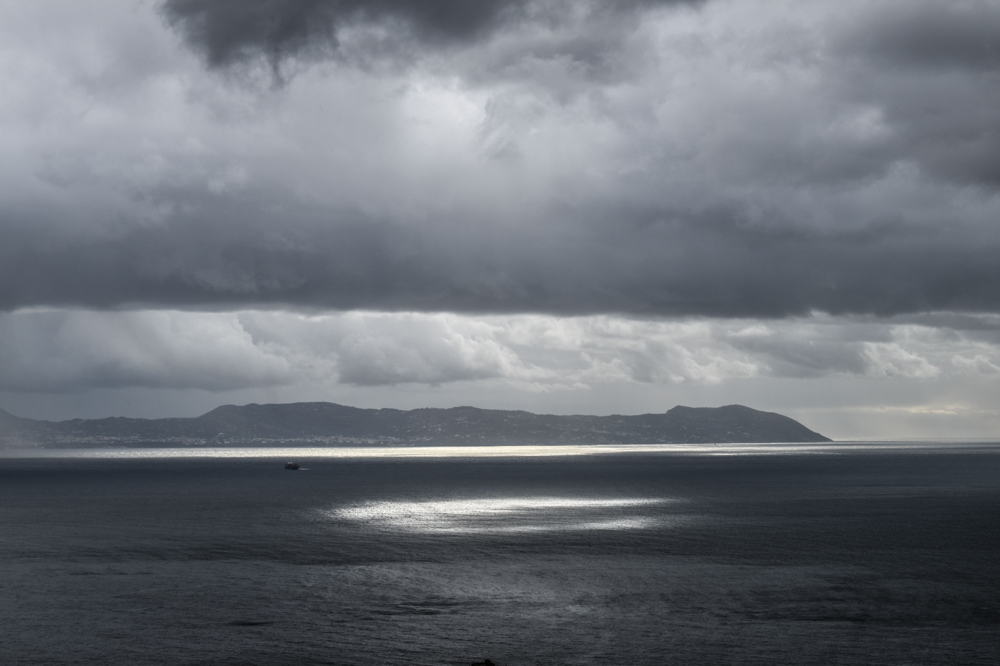

Uma paisagem e um texto de um gato gordo

Em uma tarde nublada, sob um céu cinzento coberto por nuvens, um gato gordo caminhava tranquilamente pela paisagem.
Seu pelo macio balançava com a brisa fria, enquanto suas patinhas afundavam levemente na grama úmida. Ao redor, as árvores se moviam suavemente com o vento, e o horizonte parecia envolvido por uma névoa misteriosa.
O gato, com sua barriga redonda e seus olhos curiosos, encontrou um lugar aconchegante perto de uma árvore e se sentou para observar o céu. Mesmo com o clima frio e melancólico, ele parecia completamente feliz, aproveitando a paz daquele cenário silencioso.
De vez em quando, soltava um miado baixinho, como se estivesse conversando com as nuvens, antes de se enrolar sobre si mesmo e tirar uma longa soneca.